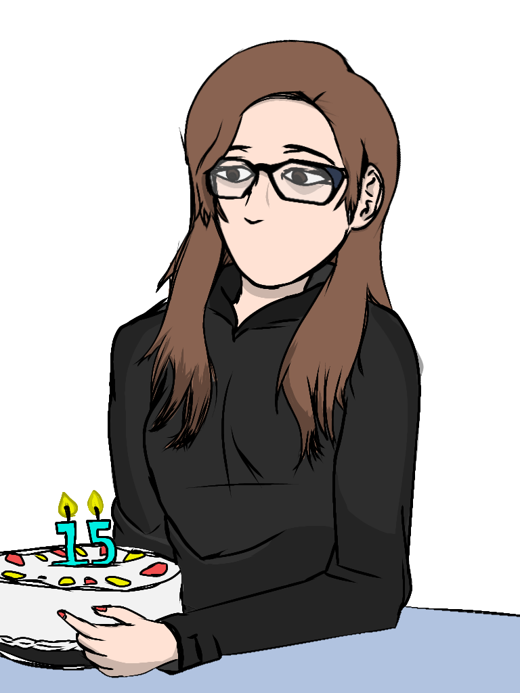

11 de junio
Para el día de hoy, 11 de junio del 2022, te deseo lo mejor y que te la pases lindo en este
que es tu día, tal vez suene genérico, pero genuinamente espero que este cumpleaños sea muy lindo
y no pase nada malo hoy o fechas posteriores, y sobre todo nadie te olvidará, o bueno, yo no te olvido.

Te hice este dibujo y algunos otros que ya viste, no son muy detallados pero espero que te gusten,
los hice con mucho amor para ti pensando en como eres en la vida real, igual perdón si están
muy hechos mal o con los colores tampoco tengo fotos tuyas :(
Bueno quería decirte que no quise solamente hacerte un dibujo y ya solo enviartelo, creé este sitio
sencillo pero bonito para ti y tratar de darte algunas palabras que te motiven ahora con 15 años, aún no
notas mucha diferencia a como eras antes, pero creéme que cuando menos lo notes ya no serás la misma
niña que alguna vez fuiste, ahora eres una señorita y puede que experimentes o te sucedan cosas
que en donde tal vez te sientas de lo peor, yo lo sé, las has tenido y tristemente tendrás,
pero yo quiero estar para ti cuando esas cosas sucedan y poder apoyarte. No sé si el tiempo nos permita
seguir estando en comunicación, pero yo siempre querré estar para ti como tú lo has estado para mí. Mientras disfruta
este día y piensa en lo dichosa que eres.
A esperar a que cumplas los dulces 16!